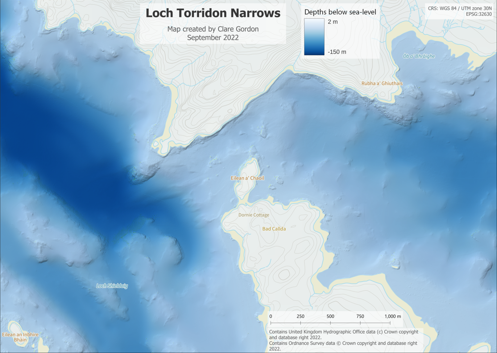

Blue
Once I’d discovered the UKHO site with lots of detailed bathymetry for the UK, it seemed obvious to produce a map of Loch Torridon. In the end, it worked best to concentrate on one part of the Loch.
Bathymetry of the Loch Torridon Narrows

Data I used
- GDAL to convert .bag files to tif and combine different resolutions into one output.
- QGIS to fill some of gaps in data (
r.fill.null), e.g. fish farm to east of Shieldaig Peninsula.
- QGIS to layout.
What did I learn?
- Where to find detailed bathymetry data for UK.
- How to extract bathymetry data from
.bag files.
- How shallow the narrows themselves are, and how quickly they drop away into the outer loch.
What do I want to do next?
- Data from 8m bathymetry doesn’t look great with more detailed areas, but I haven’t found a way round this yet.